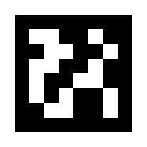
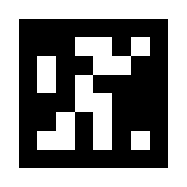

Calibration tags: print sheet
Five tags, one per page: Center and Corner 1-4.
The calibration wizard tells you where to put them.
-
Print at 100% / "Actual size". Do
not use "Fit to page" or "Scale to fit". Letter and A4
both work.
- Use plain matte paper (glossy paper causes glare the camera cannot read).
-
On every page, check that the scale bar measures 10 cm and that
the black square measures 15 cm across. If not, fix the print
scale and reprint that page.
-
Cut off the page margins and tape each tag flat on the floor (no curling or
wrinkles).
-
The arrow on each tag marks its UP side: point it toward the
top of the camera image.
The tags only need to be on the floor while you calibrate. Pick them up afterwards
and use them again only if the camera moves or its resolution changes.
CENTER
Middle of the driving area (tag ID 100)
10 cm
Black square must measure 15 cm. If not, reprint at 100%.
CORNER 1
Top-left as seen by the camera (tag ID 101)
10 cm
Black square must measure 15 cm. If not, reprint at 100%.
CORNER 2
Top-right as seen by the camera (tag ID 102)
10 cm
Black square must measure 15 cm. If not, reprint at 100%.
CORNER 3
Bottom-right as seen by the camera (tag ID 103)

10 cm
Black square must measure 15 cm. If not, reprint at 100%.
CORNER 4
Bottom-left as seen by the camera (tag ID 104)

10 cm
Black square must measure 15 cm. If not, reprint at 100%.